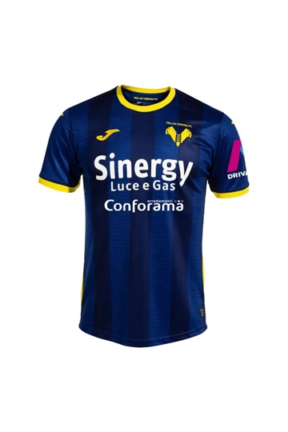
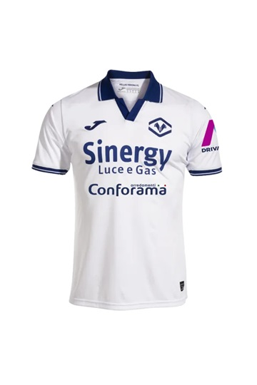
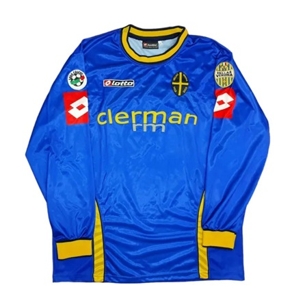
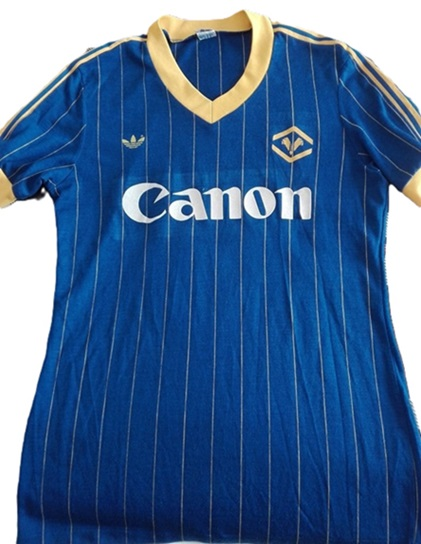

La maglia casalinga dell'Hellas Verona è tradizionalmente caratterizzata dai colori giallo e blu, che sono diventati simbolo della squadra nel corso della sua storia.
La maglia away1 (da trasferta) dell'Hellas Verona è generalmente di colore giallo, offrendo un contrasto netto rispetto alla maglia casalinga giallo-blu.

La maglia away2 (da trasferta) dell'Hellas Verona è generalmente di colore bianco, offrendo un contrasto netto rispetto alla maglia casalinga giallo-blu.
Questa maglia è stata utilizzata dal Verona nella stagione in cui è arrivata al 9° posto in classifica.

Questa è la maglia dedicata ai 120 anni dalla creazione della società.

Questa è la maglia dedicata ai 100 anni dalla creazione della società.
Questa è la maglia dello storico campionato vinto dal Verona nella stagione 1984/1985
Questa è la maglia dell'anno successivo allo storico campionato vinto dal Verona nella stagione 1984/1985, con lo scudetto tricolore.